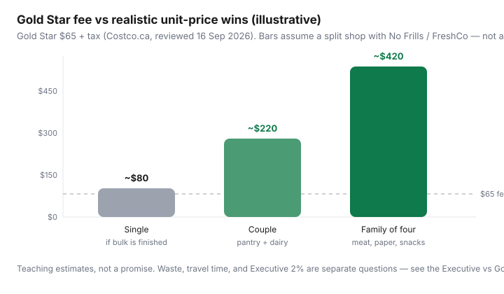

Food & Groceries · Canada
Is a Costco Canada membership worth it? A break-even framework for 2026
Membership FOMO and haul videos hide the only question that matters: do unit-price wins beat the $65 Gold Star fee (plus tax), the drive, and the food you will throw out? Executive is a second question. This guide is the first one — is Costco Canada worth joining at all in 2026 — with Canadian fees, tax-in habits, and the Personal Finance Canada / CostcoCanada split-shop consensus: warehouse for what you finish, discounter for the rest.
Disclosure: Costco membership referrals, Costco shop cards via cashback, and the CIBC Costco Mastercard are offer types. Saving Optimizer may earn a commission if we later add partner links. We do not currently claim a partnership with Costco or CIBC. Join only after you run your 90-day math. Nothing here requires a click.
Key takeaways
- Gold Star is $65/year plus tax (Costco.ca, reviewed 16 Sep 2026). That is about $1.25 a week. Waste and kilometres are the real fees.
- Costco usually wins on bulk pantry, many proteins, dairy in large formats, and gas if the station is on the route. It often loses on small produce runs versus No Frills or Food Basics.
- Singles need a freezer and a plan. Families clear the fee more easily if they do not overbuy snacks.
- Executive is optional. Run eligible spend before you pay $130.
- Skip membership if you have no storage, no way to haul, or you only wanted the food court.
Gold Star fee vs realistic unit-price savings
Costco Canada’s public membership disclaimer prices Gold Star at $65 and Executive at $130 for 12 months, each with a household card, plus applicable tax. The satisfaction-style membership guarantee has limitations — read the counter copy if you might bail.
Fee math is easy: you need a little more than $65 of documented unit-price wins versus your usual discounter, after waste. People skip the “after waste” clause and count a 3 kg yogurt they composted as a win.
Worked example (labelled, not a survey): Kirkland olive oil, coffee, frozen berries, toilet paper, and a chicken family pack that you actually freeze. Versus No Frills national-brand equivalents over a year, a couple might clear $150–$300 in unit-price gap. A single who lets berries freezer-burn might clear $40 and feel cheated. Photograph unit prices for 90 days. Do not trust memory in aisle 12.

What Costco usually wins (and loses) vs No Frills
Quebec how-tos (Aubaine and others) and PFC threads keep landing in the same place: Costco is not “cheaper groceries.” It is cheaper on a list of SKUs if you can store them.
| Usually Costco | Usually discounter | Toss-up |
|---|---|---|
| Olive oil, coffee, oats in bulk you finish | Small produce for 1–2 people | Eggs (watch unit price weekly) |
| Many chicken, beef, salmon family packs | Single-meal condiments and spices | Cheese (freeze or portion) |
| Paper, laundry, dishwasher tabs | Flyer loss-leaders you can price match | Yogurt (size vs spoilage) |
| Gasoline on the route (membership required) | Impulse bakery and $2 hot dog mythology as a grocery strategy | Rotisserie chicken vs leftover math |
Tax-in habits matter. Basic groceries are generally GST/HST-zero-rated; snacks, carbonated drinks, and prepared foods may not be. Compare the sticker you will actually pay. Warehouse club psychology is volume. Discounter psychology is the flyer. You want both, not a personality.
Travel time, bulk waste, and storage constraints
A 40-minute round trip once a month is a different product than a 40-minute trip every Saturday. Fuel, parking culture (Costco lots), and a toddler in December are costs. If your apartment fridge is 4 cubic feet, 2 kg of greens is compost with a membership card attached.
Write a not-list on the freezer door: no giant berries unless last bag is gone; no second ketchup; no produce you will not cut on Sunday. That is the same discipline as food-waste systems.
Household size scenarios: single, couple, family of four
- Single: Gold Star is a maybe. Share the household card with a parent or partner if the rules fit your life (one household). Buy pantry, coffee, frozen protein. Skip produce bulk. If you rent a room, skip membership and go as a guest with someone else — Costco’s guest rules are strict; do not bluff the door.
- Couple: Default yes if you cook most nights and live within ~20 minutes. Monthly warehouse + weekly discounter is the Canadian pattern.
- Family of four: Default yes for pantry, snacks you will actually pack, paper, and meat — with a snack cap so haul culture does not eat the win. Details in family grocery budgeting.
Gas, optical, and non-food value add-ons
Costco gas is often among the cheapest in a city when the station exists. It requires membership. It does not earn Executive 2% (purchases not recorded through front-end registers). Treat gas as Gold Star value, not Executive value.
Optical, hearing, pharmacy, and tires can pay for a membership in one visit — or not, if your benefits plan already covers a local shop. Get a quote. Food court is lunch, not a rebate. Travel and services are extras for people who already buy those things.
Payment: Costco Canada warehouses take Mastercard and debit, not Visa or Amex at the till. The CIBC Costco Mastercard is a cash-back shop-card product, not grocery-coding magic. See cards by banner.
A 90-day trial audit worksheet
- Join Gold Star only. Do not upgrade to Executive on day one.
- Keep every receipt. Mark each line: would I have bought this at No Frills / FreshCo / Food Basics, and at what unit price? Be honest about “would have.”
- Log thrown-out Costco food separately. Subtract it.
- Log extra kilometres versus your usual store.
- At day 90: (documented unit-price wins) − (waste) − (travel cost) − (pro-rated $65). If the number is not clearly positive, cancel under the guarantee terms or stop going.
- Only then open the Executive spreadsheet ($65 extra vs 2% of eligible spend, ~$3,250 break-even, exclusions).
When to skip membership entirely
- No car, no nearby warehouse, no trustworthy household card.
- You eat mostly fresh produce in small quantities and hate leftovers.
- The nearest warehouse is a weekend outing that always includes $80 of unplanned merch.
- You wanted Kirkland vodka and a hot dog. That is entertainment. Budget it as entertainment.
- Northern and remote pricing and selection are a different market — do not import a GTA haul strategy.
Costco is a tool for households that already cook and already finish bulk. It is not a personality and it is not cheaper than a discounter on every SKU. Run 90 days of receipts. Renew or walk.
Sources & date stamps
- Costco.ca member disclaimer and Executive reward pages: Gold Star $65, Executive $130, 2% eligible pre-tax merchandise, $1,250 cap, exclusion list (reviewed 16 Sep 2026).
- Costco Canada membership FAQ (household card, guarantee limitations).
- Personal Finance Canada and r/CostcoCanada threads on split-shop vs discounters (community consensus, not a survey).
- Aubaine, Costco vs neighbourhood grocery in Quebec (when membership pays off).
Frequently asked questions
How much is a Costco Canada membership in 2026?
Costco.ca materials reviewed 16 Sep 2026 list Gold Star at $65 per year and Executive at $130 per year, plus applicable tax, each with a household card. Confirm at the membership counter — fees can change.
Is Gold Star worth it for a single person?
Sometimes, if you finish bulk pantry, coffee, and frozen goods and live near a warehouse. Often not, if produce wilts, meat will not fit in a tiny freezer, or the trip is an hour. Run a 90-day audit before you renew.
Does Costco beat No Frills on everything?
No. Canadian split-shop consensus (Personal Finance Canada, CostcoCanada, Quebec how-tos) is that Costco often wins on meat, dairy in large formats, paper, and some pantry, and often loses on a small produce run or a one-off sauce. Compare unit prices, tax-in.
Should I get Executive in year one?
Usually no. Gold Star first. Executive’s extra $65 wants about $3,250 of eligible pre-tax merchandise (gas, food court, pharmacy, and many services do not count). That is a separate article.
What if I do not have a car?
Skip, share a household card with someone who does, or use Costco.ca only if the delivered unit price still beats your discounter after shipping reality. Instacart markups can erase warehouse pricing — see the delivery comparison.